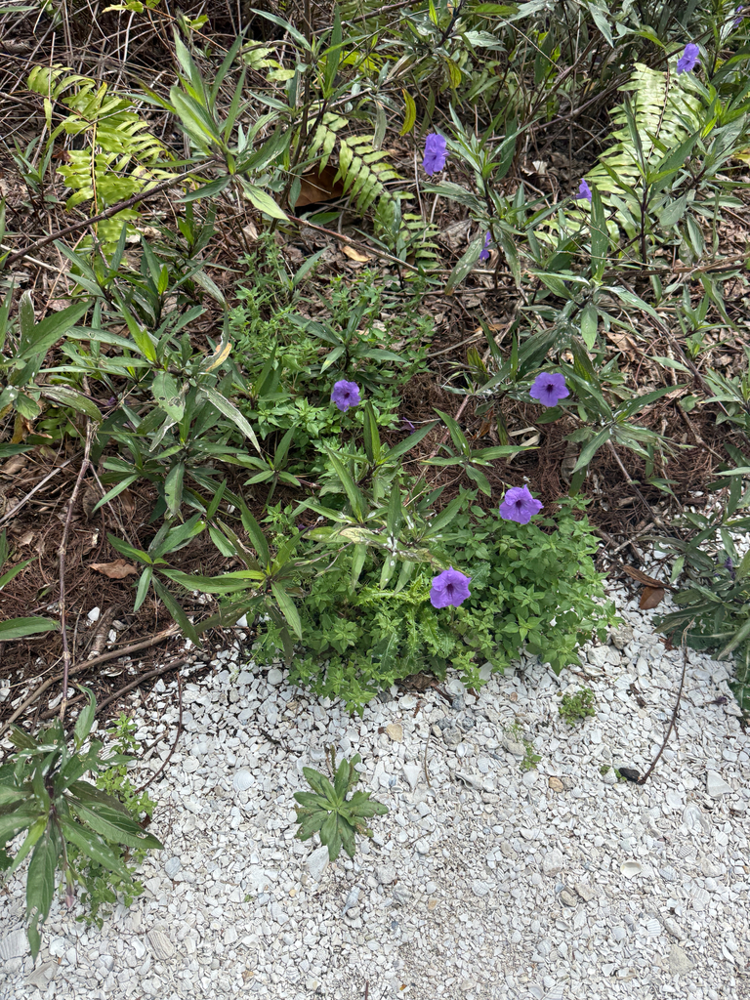

- Mexican Petunia is one of Florida's most commonly planted purple-flowered ornamentals — and one of its most problematic invasives.
- It spreads two ways at once: underground runners that form dense mats, and seed capsules that use tiny spring-loaded biological levers to catapult seeds several feet when wetted by rain.
- It is a FISC (formerly FLEPPC) Category I invasive — the highest designation — listed since 2001.
- UF/IFAS has bred sterile cultivars like the Mayan series so gardeners can keep the look without the ecological harm.
Native to Mexico, South America, and the Caribbean. Found naturally in moist disturbed ground, riverbanks, and wetland edges. Introduced to Florida before 1940 and once one of the most widely sold landscape plants in the state.
- Mexican Petunia is a textbook case of a beautiful plant that became an ecological problem. It is a FISC Category I invasive — the worst category, reserved for plants that alter how natural ecosystems function by displacing native species and changing community structure.
- The concern is sharpest in Florida wetlands, where it can shift not just plant-animal relationships but the hydrology of an entire watershed.
- Its success comes from a rare combination of traits. It produces seed year-round with no need for cold or scarification, severed stem pieces root readily — so mowing or weed-eating only spreads it — and its seed-launching machinery is genuinely remarkable. Like other members of the Acanthaceae family, each capsule holds its seeds on tiny hook-shaped levers called retinacula (or jaculators).
- When rain wets the ripe capsule it splits open and these levers catapult the seeds outward. Once a seed lands on damp ground, microscopic hairs on its coat swell into a sticky mucilage that holds moisture against the seed and speeds germination. Removal requires taking out the entire plant, roots and all.
- There is a constructive side to the story. Since 2007, a UF/IFAS breeding program led by Rosanna Freyre has developed sterile cultivars — the Mayan series ('Mayan Purple,' 'Mayan White,' 'Mayan Pink,' 'Mayan Compact Purple') plus the older 'Purple Showers' — that give gardeners the same showy flower without the seed-driven invasion.
- At Palma Sola the plant is presented in the Plants to Watch and Invasive Awareness area precisely so visitors can recognize it and understand why the sterile alternatives matter.
- Native alternatives for home gardens include the native Wild Petunia (Ruellia caroliniensis), Blue Curls, Butterfly Weed, and Swamp Milkweed.
Mexican Petunia's purple trumpet flowers do attract butterflies and some native bees, and it is a nectar source and a minor larval host for certain butterflies.
But its wildlife value is outweighed by the harm it does: by forming dense monocultures it displaces the diverse native plant communities that support far richer wildlife, and in wetlands it can crowd out the native species that specialist insects and birds depend on.
The honest assessment is that its ecological costs exceed its pollinator benefits — which is why native alternatives are recommended.
explosive seed dispersal and spreading rhizomes/runners. Severed stem sections also root readily, so cutting it back spreads rather than controls it.
Purple (occasionally pink or white) trumpet-shaped flowers about 1.5 to 2 inches wide, with five flaring lobes. Each flower lasts a single day, but the plant blooms continuously spring through fall.
Slender seed capsules that hold their seeds on tiny hook-shaped levers (retinacula, or jaculators) — a hallmark of the Acanthaceae family. When a ripe capsule is wetted by rain it splits and the levers catapult the seeds several feet from the parent plant. On contact with damp ground the seed coat releases a sticky mucilage that anchors it and speeds germination.
Seeds need no cold or scarification to sprout.
Dark green, lance-shaped, 6 to 12 inches long and ½ to ¾ inch wide, oppositely arranged, with prominent veins on the underside. Margins smooth to slightly wavy. Stems green or purple-tinged.
Spreading rhizomes and runners form dense, almost impenetrable mats; resprouts vigorously from crowns and root fragments.
Tall upright purple-stemmed clumps topped with five-lobed purple trumpets that carpet the ground below with fallen blooms. Watch for it forming solid stands that exclude everything else — that mat-forming habit is the visual signature of the invasive wild type. Sterile garden cultivars look similar but do not set the seed capsules.
This isn't a food plant for people, though tortoises and poultry are reported to browse the foliage. It has no known toxicity to people and isn't listed as toxic to dogs.


- © Cole Guyton (CC-BY-NC), via iNaturalist
- © Denise Sosa (CC-BY-NC), via iNaturalist
- © Ruby Meador (CC-BY-NC), via iNaturalist